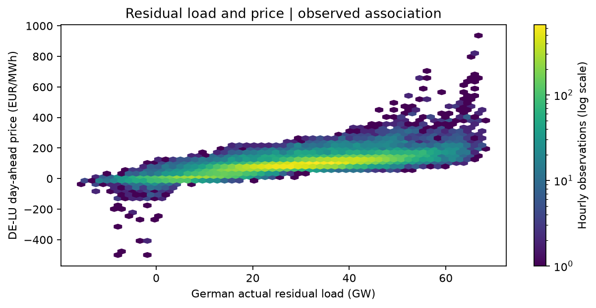
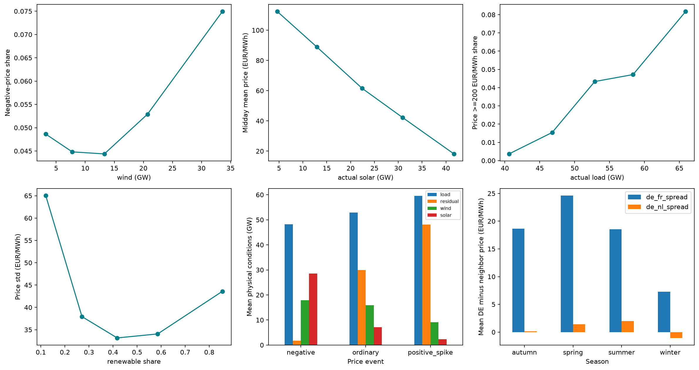

Actual SMARD data; 34032 complete hourly rows out of 34032. Source: Bundesnetzagentur | SMARD.de. Germany physical variables explain DE-LU prices retrospectively; Luxembourg is not included in these load/generation totals. High/low comparisons use full-sample top/bottom quartiles and moving seven-day block confidence intervals. Hour, weekday and month are controlled in separate explanatory models trained before 2025, held out afterward. Seasonal/fuel-price, outage, dispatch and cross-border confounding remain; simultaneous conventional output is endogenous. Permutation importance is descriptive and unstable under correlated predictors; not a causal effect or ex-ante forecast. Nuclear is excluded from models because its series has extensive missing observations; none are filled with zero.
| finding | variable | outcome | period_start | period_end | complete_rows | low_threshold | high_threshold | low_n | high_n | low_mean | high_mean | difference | ci_low | ci_high | method | |
|---|---|---|---|---|---|---|---|---|---|---|---|---|---|---|---|---|
| 0 | Residual-load price gradient | actual_residual_load_mw | price_eur_mwh | 2022-12-31 23:00:00+00:00 | 2026-11-18 22:00:00+00:00 | 34032 | 19149.0600 | 39414.1675 | 8508 | 8508 | 34.103580 | 147.323111 | 113.219530 | 106.585446 | 122.543038 | Full-sample descriptive quartiles; 500 moving 7-day block bootstraps; no causal inference |
| 1 | Wind and negative-price incidence | wind_mw | negative | 2022-12-31 23:00:00+00:00 | 2026-11-18 22:00:00+00:00 | 34032 | 6503.9575 | 22810.2500 | 8508 | 8508 | 0.046662 | 0.072050 | 0.025388 | 0.003038 | 0.047474 | Full-sample descriptive quartiles; 500 moving 7-day block bootstraps; no causal inference |
| 2 | Midday solar-price association | actual_solar_mw | price_eur_mwh | 2023-01-01 09:00:00+00:00 | 2026-11-18 14:00:00+00:00 | 8508 | 10605.9150 | 33056.2500 | 2127 | 2127 | 109.393443 | 21.343619 | -88.049824 | -100.493046 | -76.832867 | Full-sample descriptive quartiles; 500 moving 7-day block bootstraps; no causal inference |
| 3 | Demand and high-price incidence | actual_load_mw | spike | 2022-12-31 23:00:00+00:00 | 2026-11-18 22:00:00+00:00 | 34032 | 45432.2550 | 59594.3125 | 8508 | 8508 | 0.004231 | 0.074753 | 0.070522 | 0.043551 | 0.098125 | Full-sample descriptive quartiles; 500 moving 7-day block bootstraps; no causal inference |
| model | holdout_mae | train_rows | holdout_rows | |
|---|---|---|---|---|
| 0 | calendar_controlled_ridge | 32.270822 | 17544 | 16488 |
| 1 | calendar_controlled_boosting | 33.980849 | 17544 | 16488 |
| price_eur_mwh | actual_residual_load_mw | actual_load_mw | wind_mw | actual_solar_mw | renewable_share | |||||||||||||
|---|---|---|---|---|---|---|---|---|---|---|---|---|---|---|---|---|---|---|
| count | mean | std | count | mean | std | count | mean | std | count | mean | std | count | mean | std | count | mean | std | |
| season | ||||||||||||||||||
| autumn | 8452 | 110.753588 | 71.775064 | 8452 | 30257.052895 | 14572.959951 | 8452 | 53552.159030 | 9008.073701 | 8452 | 17378.252221 | 11676.087798 | 8452 | 5916.853914 | 9854.195839 | 8452 | 0.435975 | 0.254835 |
| spring | 8828 | 82.912063 | 51.832988 | 8828 | 27556.601341 | 13886.403162 | 8828 | 51365.258158 | 8292.065569 | 8828 | 13347.295995 | 9175.885767 | 8828 | 10461.360822 | 13638.359276 | 8828 | 0.460037 | 0.265133 |
| summer | 8832 | 88.361898 | 55.749524 | 8832 | 25250.451694 | 13821.718002 | 8832 | 49110.088066 | 7498.592311 | 8832 | 10974.927082 | 7665.260084 | 8832 | 12884.709290 | 14786.821872 | 8832 | 0.474236 | 0.293132 |
| winter | 7920 | 100.094645 | 52.859631 | 7920 | 33896.265088 | 15199.471415 | 7920 | 58131.620681 | 9174.911741 | 7920 | 21845.186242 | 12592.658139 | 7920 | 2390.169350 | 4858.153593 | 7920 | 0.425245 | 0.233139 |
| price_eur_mwh | physical_fr_net_import_mw | commercial_fr_net_import_mw | de_fr_spread | |
|---|---|---|---|---|
| price_eur_mwh | 1.000000 | 0.159996 | 0.028630 | 0.236327 |
| physical_fr_net_import_mw | 0.159996 | 1.000000 | 0.783160 | 0.588772 |
| commercial_fr_net_import_mw | 0.028630 | 0.783160 | 1.000000 | 0.513072 |
| de_fr_spread | 0.236327 | 0.588772 | 0.513072 | 1.000000 |

